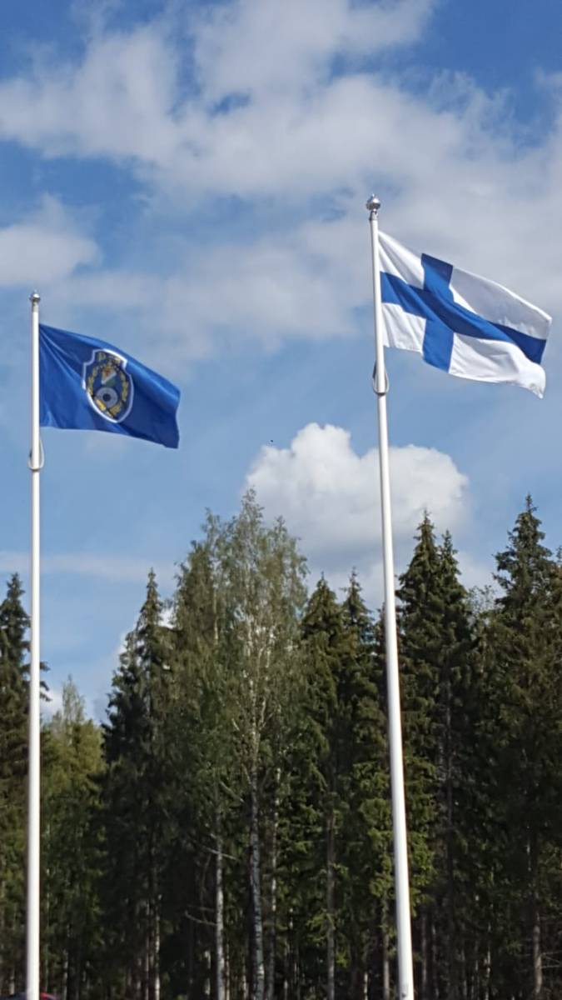
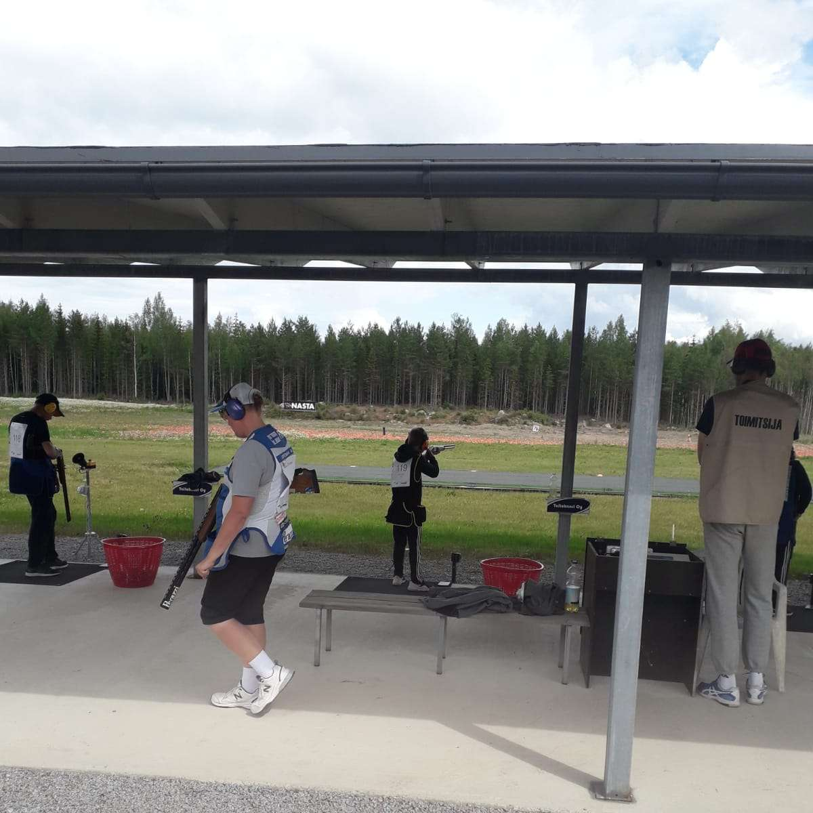

Tampereen vanhin urheiluseura jo vuodesta 1879
Pohjois-Hämeen Ampujat ry on Tampereen vanhin urheiluseura, jonka juuret ulottuvat vuoteen 1877. Tuolloin perustettiin "Petoeläinten hävittämisosakeyhtiö", jonka tehtävänä oli suojella karjaa ja asutusta pedoilta. Kaksi vuotta myöhemmin, vuonna 1879, seura sai virallisen muotonsa nimellä Tampereen Metsästys- ja Ampumaseura.
Lähes 150 vuoden aikana seura on kasvanut pienestä paikallisesta yhdistyksestä yhdeksi Suomen merkittävimmistä ampumaurheiluseuroista. Tänä päivänä seurassa on noin 1 000 jäsentä, jotka harjoittelevat haulikko-, kivääri-, pistooli- ja liikkuvan maalin ammuntaa kuudella eri ampumaradalla Pirkanmaalla.
Seuran toiminnassa yhdistyvät pitkät perinteet, kilpaurheilun huipputulokset ja avoin yhteisöllisyys. PHA on kasvattanut olympiamitalisteja ja maailmanmestareita, mutta toivottaa yhtä lämpimästi tervetulleeksi jokaisen ampumaurheilusta kiinnostuneen harrastajan.

Tärkeimmät virstanpylväät 1877 vuodesta tähän päivään
Nämä periaatteet ohjaavat toimintaamme ja määrittelevät identiteettimme
Lähes 150 vuoden historia luo vankan perustan, jolle rakennamme tulevaisuutta. Olemme Tampereen vanhin urheiluseura ja kannamme tätä perintöä ylpeydellä.
Haulikko, kivääri, pistooli, liikkuva maali ja metsästysammunta — tarjoamme kattavan valikoiman ampumaurheilulajeja kaikille taitotasoille.
Kuusi ampumarataa Pirkanmaalla, mukaan lukien Kokkovuoren kansainvälisen tason haulikkoampumakeskus. Radat palvelevat sekä harrastajia että kilpa-ampujia.
Tervetuloa kaikille iästä, sukupuolesta tai taitotasosta riippumatta. Ampumakoulut, nuorisotoiminta ja avoimet tapahtumat takaavat matalan kynnyksen osallistua.
Kolmen vuosisadan aikana olemme sopeutuneet muuttuviin olosuhteisiin, siirtäneet ratoja ja uudistaneet toimintaa ajan vaatimusten mukaisesti.
Olympiamitaleista maailmanmestaruuksiin — seuramme ampujat ovat menestyneet kansainvälisellä huipputasolla ja inspiroivat seuraavia sukupolvia.
Toimimme yhdessä alueen kuntien ja lajiliiton kanssa